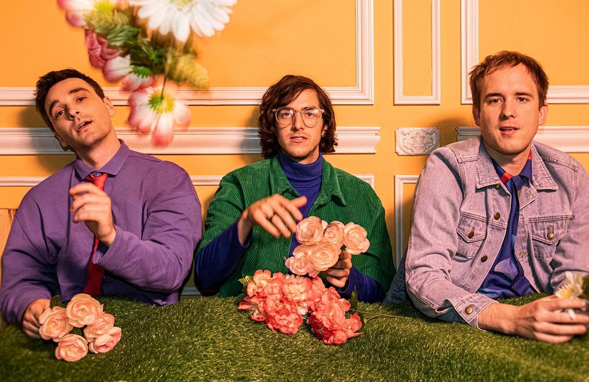

Isso é estar half•alive.
Half Alive (estilizada como half•alive ou h•a) é uma bande de música alternativa, indie pop e indie rock da cidade de Long Beach, Califórnia (Estados Unidos). Ela é composta por um total de 3 integrantes: o vocalista Joshua "Josh" William Taylor, o baixista J Tyler Ross Johnson e o baterista Brett Kramer. A banda se formou em 2016 através de um projeto no qual Josh embarcou de escrever um total de 50 músicas em 7 meses, então se juntou com um membro de sua igreja não-denominacional Brett Krammer e mais tarde, em 2017, incorporou J Tyler, irmão de um dos membros do JA Collective (dupla de dançarinos que constantemente colabora com half•alive) e longo colega de Brett Krammer. Com isso, a banda lançou até hoje 3 álbuns e alguns EPs, sendo "Now, Not Yet" o seu mais bem-sucedido.